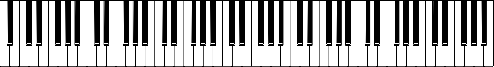

Section 2 Tones, frequencies, and \(\ZZ_{ 12 }\)
We need a bit of musical language to get started. (A useful index of sorts on all kinds of musical and acoustic terms is
here; it is based on [14].)Subsection 2.1 A few musical concepts
A single sound played on some musical instrument (or sung by a human voice) is a tone. If you know some physics/acoustics, then you know each tone has a sound wave, which in turn has a (fundamental) frequency, measured in hertz (Hz). E.g., a concert A has 440 Hz. When musicians give a tone a name (we just named a concert A, also known as A4), we call this the pitch of the tone. A scale is an ordering of a system of pitches.
An interval consists of two tones/pitches. If the frequencies of the two tones have the ratio \(\frac 2 1\text{,}\) we call the interval an octave. International pitch notation uses the same letter for two pitches that are an octave apart; e.g., A3 (at 220 Hz) is an octave below A4, whereas A5 (at 880 Hz) is an octave above A4. The set of all pitches that differ by octaves is called a pitch class and can be denoted by a single letter (e.g., A). Viewed mathematically, pitch classes are wonderful examples of equivalence classes.
1
In music psychology, tones in the same pitch class are said to have the same chroma.
Frequencies behave multiplicatively; e.g., moving up an octave means doubling the frequency of the tone, moving down an octave means halving it. We can also move in between octaves: e.g., we can multiply the frequency of a given tone by \(\frac 3 2\) to reach another tone; to reach the octave above the original tone, we can multiply the frequency again by \(\frac 4 3\text{.}\)
In Section 3, we will discuss how one constructs actual musical scales; for now we want to pre-process this with a (simple) abstract mathematical model. We will make the crucial assumption that a scale has a periodic character governed by octaves, in the sense that, if we know the frequencies of the tones within a given octave, the corresponding tones in the following octave will have exactly double those frequencies. Thus, if a scale features \(n\) tones within one octave, we can compute the frequency of any tone in the scale if we know the frequencies of these \(n\) tones.

figure creditAs an example, the black keys on a piano (see Figure 2.1) form an instance of what’s known as a pentatonic scale. Start at your favorite F\(\sharp\text{,}\) and five black keys later you will end up at another F\(\sharp\text{,}\) one octave higher. So here \(n = 5\) and the frequencies of any consecutive F\(\sharp\text{,}\) G\(\sharp\text{,}\) A\(\sharp\text{,}\) C\(\sharp\text{,}\) and D\(\sharp\) determine the frequency of the whole scale. Similarly, the white keys form an example of a heptatonic scale, with \(n = 7\text{.}\) As a final example, all keys of the piano form the chromatic scale, with \(n = 12\text{.}\) A musician will note a crucial difference between the first two scales and the chromatic one: the latter consists entirely of semitone steps, whereas the two former scales have steps consisting of some semitones, some whole tones, and some minor thirds.
It is a short step to model a scale with \(n\) notes in an octave with \(\ZZ_{ n } := \{ 0, 1, 2, \dots, n-1 \}\) as a labeling of a base scale (such as F\(\sharp\text{,}\) G\(\sharp\text{,}\) A\(\sharp\text{,}\) C\(\sharp\text{,}\) and D\(\sharp\) in our pentatonic example), the assigned frequencies of which will determine those of the entire scale.
Subsection 2.2 Interval arithmetic
From now on, we will work with a chromatic scale, with 12 tones in an octave. We model it as \(\ZZ_{ 12 }\text{,}\) with C as the base note; this is an arbitrary starting point, and so in a mathematical sense, we may ignore the second row in Table 2.2 and simply think of tones (rather, their pitch classes) as elements in \(\ZZ_{ 12 }\text{;}\) we will keep featuring this row in tables below for musically inclined readers.
| 0 | 1 | 2 | 3 | 4 | 5 | 6 | 7 | 8 | 9 | 10 | 11 |
| C | C\(\sharp\) | D | E\(\flat\) | E | F | F\(\sharp\) | G | G\(\sharp\) | A | B\(\flat\) | B |
In this model, intervals correspond to differences, and if we care only about pitch classes, we compute these differences in \(\ZZ_{ 12 }\text{.}\) Table 2.3 gives the musical terms.
| 0 | (perfect) unison |
| 1 | semitone |
| 2 | whole tone |
| 3 | minor third |
| 4 | major third |
| 5 | (perfect) forth |
| 6 | tritone |
| 7 | (perfect) fifth |
| 8 | minor sixth |
| 9 | major sixth |
| 10 | minor seventh |
| 11 | major seventh |
| 12 | octave |
We can now see the aforementioned multiplicative behavior of frequencies mirrored in the additive structure of the integers or, if we care only about pitch classes, that of \(\ZZ_{ 12
}\text{.}\) For example, a fifth plus a forth yields an octave (since \(7 + 5 = 12\)), and so the respective frequency ratios (in a natural tuning, these would be \(\frac 3 2\) and \(\frac 4 3\)) multiply to \(2\text{.}\)
As another example, arguing a bit more within \(\ZZ_{ 12 }\text{,}\) we can wee that \(5\) and \(7\) are additive inverses; musically this means, e.g., that moving down a forth is in the same pitch class as moving up a fifth; indeed the two resulting notes are an octave apart.
Subsection 2.3 The harmonic spectrum
A tone actually comes with many frequencies: its fundamental frequency (which determines the pitch of the tone) and its harmonic spectrum, consisting of positive integer multiple of the fundamental frequency. E.g., the first and second harmonic of a given tone will form an octave. The relative intensity of these harmonics are, for the most part, responsible for the tone quality/timbre; i.e., different instruments will feature different harmonic spectra.
2
Instruments also feature resonating frequencies that are not integer multiples of the fundamental; these are called partials. They play a large role, e.g., in bells and percussion instruments.
The third and second harmonics have thus a frequency ratio of \(\frac 3 2\text{,}\) the forth and third harmonics one of \(\frac 4 3 \text{,}\) and so on. Musically, the interval between the third and second harmonics is a fifth, and we will use its frequency ratio of \(\frac 3 2\) as a starting point for building musical scales.
Subsection 2.4 A first number-theoretic problem
As an additive group, \(\ZZ_{ 12 }\) is generated by \(1\text{,}\) \(5\text{,}\) \(7\text{,}\) or \(11\text{.}\) So, e.g., repeatedly adding \(7\) runs through all numbers in \(\ZZ_{ 12 }\) and will eventually give 0 (after the twelfth addition). Musically, this means that repeatedly going up in fifth will cycle through each pitch class (this is known as the circle of fifths, see Figure 2.4) and will end up in the starting pitch class after twelve steps.

figure creditMathematically, this should translate in \((\frac 3 2)^{ 12 }\) being a power of \(2\) (corresponding to a few octaves), more precisely, \(2^7 = 128\text{.}\) The uniqueness of prime factorization tells us that this cannot happen, though it’s close:
Thus our starting point of building scales from fifths features two conflicting philosophies: acoustics (more precisely, the harmonic spectrum) tells us that the natural frequency ratio of the fifth is \(\frac 3 2\text{,}\) and mathematics (more precisely, prime factorization) tells us that we will never reach an octave with this frequency ratio. So something has to give, and there is an interesting bouquet of somethings, each yielding a different scale.